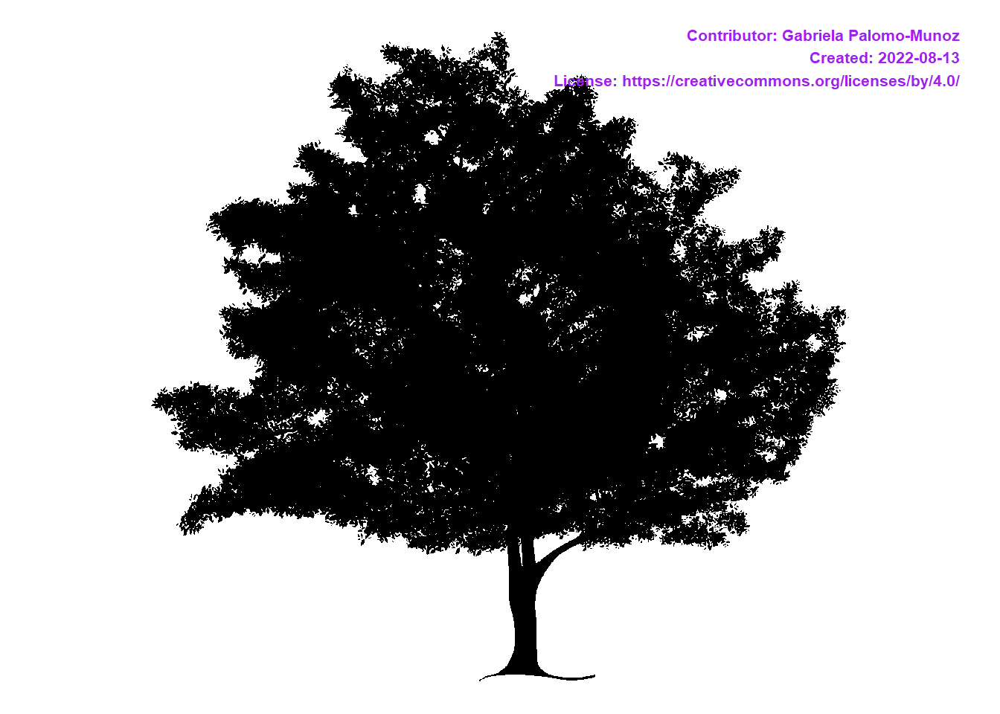
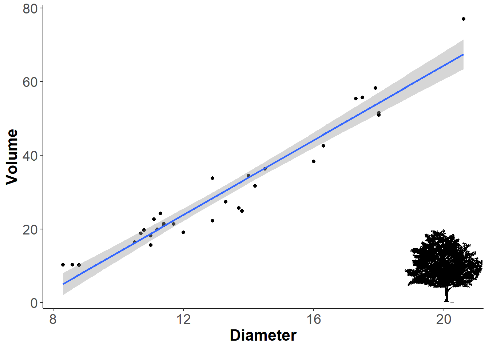
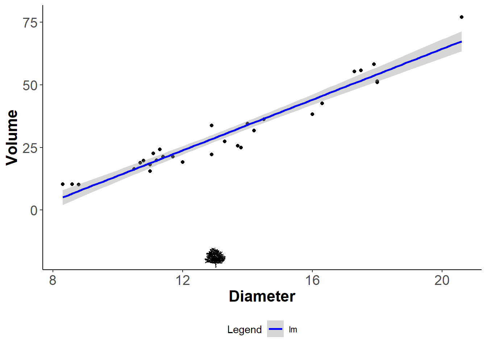
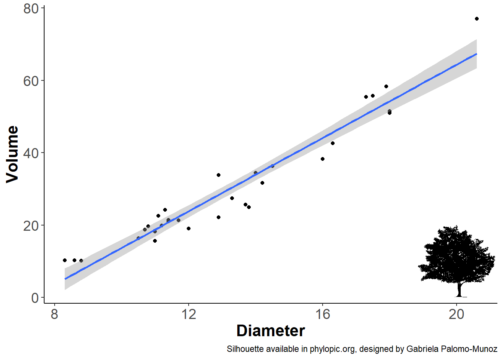

# Stable version from CRAN
install.packages('rphylopic')
# Development version from github
# install.packages('devtools')
devtools::install_github('palaeoverse-community/rphylopic')The rphylopic package
‘rphylopic’ is one of my most used r packages. It basically allows users to look for silhouettes that are freely available in phylopic.org and place them on any graph created in either base R or ggplot2. You can also use these silhouettes on maps or other plots, but here I will show you how to use rphylopic with ggplot2.
The documentation for phylopic is available here. This package is not new, it was created by Scott Chamberlain in 2018. Fun fact, I designed the original cheatsheet for this package back in 2019. Now it’s maintained by William Gearty and Lewis A Jones from the Paleoverse team.
What is phylopic?
Phylopic is this amazing website created by Mike Keesey where digital artists (like me!) upload their silhouettes representing a taxonomic category. Usually, they represent a species, but sometimes you also have silhouettes for a family or a genus. If you find yourself using a lot of silhouettes for your work, I highly encourage you to donate to his patreon. I have done so in the past. Oh and be sure to follow Mike and phylopic on twitter or mastodon too.
rphylopic and ggplot2
First we will start by installing ‘rphylopic’:
Then we load the following packages and dataset that we will use:
library(ggplot2)
library(rphylopic)
library(dplyr)
# We will use the tree dataset
data("trees")Let’s start with a simple plot
The trees dataset provides measurements of diameter, height, and volume of timber in 31 felled black cherry trees. The diameter is labled as girth in the dataset so let’s start by renaming it to diameter.
trees <- trees %>%
rename(Diameter = Girth) # new name = old name
# Let's check that it worked
names(trees)[1] "Diameter" "Height" "Volume" Now let’s fit a linear regression between Diameter and Volume. This is just a silly example just to have a graph on which we can plot a silhouette.
ggplot(trees,aes(Diameter, Volume)) +
geom_point() +
geom_smooth(method='lm', formula = y~x) +
theme_classic()+
theme(axis.title = element_text(face = 'bold', size = 16),
axis.text = element_text(size = 14)) -> ourplot
ourplot 
Now let’s put a silhouette on that plot!
Let’s start by checking if we have silhouettes for the species we want. In this case a black cherry tree which is Prunus serotina
bct <- pick_phylopic(name = 'Prunus serotina')Error in get_uuid(name = name, n = n, url = FALSE) : Image resource not available for name. Ensure provided name is a valid taxonomic name or try a species/genus resolution name.
We got an error saying there are no available silhouettes for this species (note to self, we should draw this and upload it asap!). So let’s check another one that looks like our black cherry trees. How about Flowering Dogwood, Cornus florida. It’s not the same species obviously but the silhouette could represent either tree. Not ideal but for this example I suppose it’s ok.
bct <- pick_phylopic(name='Cornus florida')Warning in get_uuid(name = name, n = n, filter = filter, url = FALSE): Only 1
item(s) are available.This is the only image. Returning this uuid data.[1] "8b16a223-4e27-4ce5-83a4-904b86287d49"
It shows a warning saying we only have one silhouette for this species. Sometimes, you get a species with more than one silhouette but you can see them all by typing 1 on the console when prompted. See my tweet here for an example on how to do this.
Now back to our plot. Let’s add a silhouette. To know where to place it, think of the arguments x and y as coordinates on your graph, and the silhouette as a point you want to place in the plot. So here, I wanted it on the lower left part of the plot, which corresponds with x=20 and y = 10. The center of the silhouette will be placed on that point. The ysize argument controls how tall the silhouette will be, and is in relation to the y-axis scale.
ourplot +
add_phylopic(img = bct, # silhouette
x=20, # based on x axis coordinates
y=10, # based on y axis coordinates
ysize = 20) -> ourplot
ourplot
Let’s put the silhouette next to a legend
Now because we want the silhouette outside the plot, we must set the coordinates to negative. In this case, the legend is at the bottom so we set the y-axis coordinates to -20.
ggplot(trees,aes(Diameter, Volume)) +
geom_point() +
geom_smooth(method='lm', formula = y~x, aes(color = 'lm')) +
scale_color_manual(name = 'Legend', values = 'blue')+
theme_classic()+
theme(axis.title = element_text(face = 'bold', size = 16),
axis.text = element_text(size = 14),
legend.position = 'bottom',
# The backgroun of the legend set to transparent because it
# overlaps the silhouette
legend.background = element_rect(fill="transparent"))+
add_phylopic(img = bct, # silhouette
x=13, # based on x axis coordinates
# The y must be set to negative so it's outside the plot
y=-19, # based on y axis coordinates
ysize = 8) -> ourplot_legend
ourplot_legend
More than one silhouette on the plot
If you want to add more than one silhouette, then just use the ‘add_phylopic()’ function again. I re-used the same silhouette, but you could use another one here.
ourplot +
add_phylopic(img = bct, # First silhouette
x=20, # based on x axis coordinates
y=10, # based on y axis coordinates
ysize = 20)+ # based on y axis coordinates
add_phylopic(img=bct, # Second silhouette
x=10,
y=70,
ysize = 30)
Points as silhouettes
If you wanted the points to be little trees instead of points, then you can do so like this. I personally don’t like plots like this but I am showing you it’s possible:
ggplot(trees,
aes(Diameter, Volume)) +
geom_point() +
geom_smooth(method='lm', formula = y~x) +
theme_classic()+
theme(axis.title = element_text(face = 'bold', size = 16),
axis.text = element_text(size = 14)) -> plot2
for(i in 1:nrow(trees)){
plot2 <- plot2 + # These two names must match
add_phylopic(img = bct,
x = trees$Diameter[i],
y = trees$Volume[i],
ysize = 5)
}
plot2
Let’s not forget the attribution
Now let’s not forget to add the attribution of the silhouette to the plot! You can also add the attribution in the caption or in the acknowledgment section of a publication.
uuid_bct <- get_uuid(name = 'Cornus florida')
get_attribution(uuid_bct)$contributor
[1] "Gabriela Palomo-Munoz"
$contributor_uuid
[1] "f57cf3c4-210c-4bcf-a759-9fcbc0cd8ba1"
$created
[1] "2022-08-13"
$contact
[1] "gabriella.palomo@gmail.com"
$image_uuid
[1] "8b16a223-4e27-4ce5-83a4-904b86287d49"
$license
[1] "https://creativecommons.org/licenses/by/4.0/"
$license_abbr
[1] "CC BY 4.0"Final graph!
att <- get_attribution(uuid_bct)$contributor
ourplot +
labs(caption = paste0('Silhouette available in phylopic.org, designed by ', att))
And don’t forget to cite rphylopic too:
citation("rphylopic")
To cite rphylopic in publications, use the following citation:
Gearty, W. and Jones, L.A. 2023. rphylopic: An R package for
fetching, transforming, and visualising PhyloPic silhouettes. Methods
in Ecology and Evolution, 14(11), 2700-2708. doi:
10.1111/2041-210X.14221.
A BibTeX entry for LaTeX users is
@Article{,
title = {rphylopic: An R package for fetching, transforming, and visualising PhyloPic silhouettes},
author = {William Gearty and Lewis A. Jones},
year = {2023},
volume = {14},
number = {11},
pages = {2700-2708},
journal = {Methods in Ecology and Evolution},
doi = {10.1111/2041-210X.14221},
}And that’s it, that’s all I have for now. I will do another blog post with an example in base R and a map.
Gabby
How to save silhouettes
if you want to save the silhouette in a specific directory then use the function ‘save_phylopic(img = bct, path =’./bct.png’, bg = ‘transparent’)’.
The bg argument is so that the silhouette is saved using a transparent bakcground and not a white one which would appear on your plot as a white square every time you wanted to insert the saved silhouette into a graph.